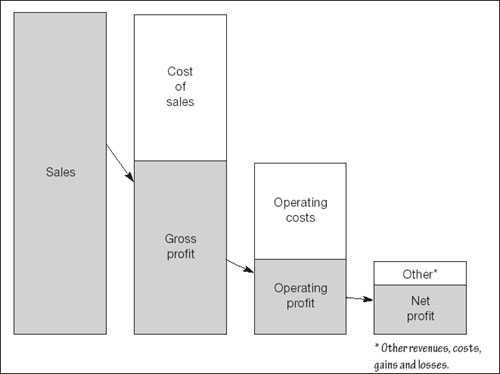
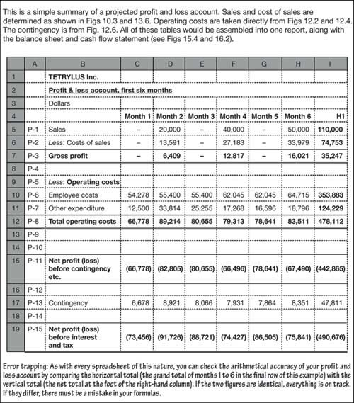

The income statement, or profit and loss account
In a curious departure from the pessimism for which we have come to know and love bean counters, the American branch of their family has managed to give the profit and loss statement (P&L) an optimistic name. They call it an income statement, somehow ignoring the fact that it also includes costs – a lot of them too. Moreover, in the dismal days of the early millennium, when corporations around the world were announcing record losses, income statement might be considered a contradiction in terms. I stick with the term profit and loss because it seems less ambiguous, but the term income statement is increasing in popularity worldwide.
P&L – what it is
A profit and loss account is exactly what it claims to be: basically, a record of sales, other revenues and costs, and gains and losses arising from ongoing operations. The bottom line in the P&L is the bottom line for the business: the net profit or loss.
The account does not include capital transactions, such as borrowing, investment and purchases of fixed assets, but it does show current income and costs (and, let me stress this, bookkeeping gains and losses) related to these items – interest, depreciation, and so on. The P&L is a statement of flows – the money which pours into and out of the business in a given period of time, be it a month, quarter, year or some other interlude. As far as possible, transactions are matched to the period of the account using the accruals system already discussed.
Getting to net profit
P&L – what it shows
There are several key balances struck in a profit and loss account, and it can be presented in various ways. The structure indicated in Fig. 14.1 highlights the key entries and balances as described next. Published accounts that you encounter probably will not spell out the entries in quite the way shown here. I have taken it step by step to highlight how the various subtotals are derived.
| Tetrylus Software Inc. | ||
| Profit & loss account | ||
| US dollars millions | ||
| ID | 2006 | |
| PL01 | Sales | 10.11 |
| PL02 | Cost of sales | (4.77) |
| PL03 | Gross profit | 5.34 |
| PL04 | Operating costs – sales and administration | (2.88) |
| PL05 | Operating costs – depreciation, etc. | (0.80) |
| PL06 | Total operating costs | (3.68) |
| PL07 | Operating profit (loss) | 1.65 |
| PL08 | Recurring non-trading net income | 0.57 |
| PL09 | Recurring non-trading net expenditure | (0.29) |
| PL10 | Other non-recurring non-trading net income | 0.00 |
| PL11 | Profit (loss) from continuing operations, before tax | 1.94 |
| PL12 | Provision for income tax | (0.02) |
| PL13 | Profit (loss) from continuing operations, after tax | 1.93 |
| PL14 | Unusual items | (0.00) |
| PL15 | Net profit (loss) | 1.92 |
| PL16 | Other unrealized gains or losses | 0.59 |
| PL17 | Comprehensive profit/income (loss) | 2.51 |
| We are in beanie realm now, so this table and the next few show negative amounts in brackets – an accountant’s trick to prevent you from overlooking minus signs. | ||
In the world’s largest corporate scandal, the US telecoms giant WorldCom lied about making $3.85 bn of profits over 15 months, by booking expenses as capital investment– thus keeping them out of the profit and loss account.
|
| When examining any financial reports, try to visualize how the entries were created. Always ask yourself could they have recorded this differently? Obvious areas ripe for window dressing are depreciation and inventory, but there is plenty of other scope for intentional or accidental trickery (e.g. see Fig. 12.5). |
Gross profit. You met with gross profit in the previous chapter: recall that it is sales less the cost of sales. For many companies, cost of sales makes up the major outlays.
Popular beanie acronyms are EBIT (earnings before interest and taxes), and EBITDA (ditto, and also before depreciation and amortization). These measures are good for comparing results from companies with differing financing structures (leverage), tax obligations, and depreciation policies.
Operating profit. Deduct operating costs from gross profit to arrive at the operating profit (or loss). This is, perhaps, the core of the profit and loss account. It is the net income which results from normal operations. In case you overlook its importance, given that it is swamped by the rest of the P&L shown here, remember that we have just spent several chapters reviewing these revenues and costs. The other items in Fig. 14.1 result from fewer transactions, but deserve special mention (as discussed below).
Profit from ongoing operations, before tax. Working down Fig 14.1, the next couple of entries show revenue, expenses, gains and losses which are not part of the company’s normal operations but which nevertheless arise from its very existence. Such transactions include interest paid on loans, interest received on bank deposits and similar instruments, and investment income. For analysis, they can be classified as recurring or non-recurring, depending on whether they feature regularly in the accounts. I have shown them separately to emphasize the fact that recurring items can, loosely speaking, be expected to exert an ongoing influence on the bottom line.
Profit from ongoing operations, after tax. There is not too much to say about taxation, other than that your corporation will no doubt employ well-paid specialists to minimize the tax bill. Tax evasion is simple but illegal. Tax avoidance is legal, but complex. Taxes receive special attention in financials because no one much likes paying them – and reversing out taxes makes inter-company comparisons more reliable.
Do not confuse extraordinary items (one-offs such as the effects of natural disasters) with exceptional items (which result from the ordinary activities of the company but are large enough to require special attention).
Net profit. Maybe this should be called net profit before comprehensive income. It is the line struck in the profit and loss account after dealing with unusual items. These are things that are considered to have nothing to do with the normal performance of the business. They are income, expenditure, gains and losses arising from three events:
Extraordinary items, such as losses incurred due to flooding or other natural disaster.
Discontinued operations, such as costs and income which arise after a subsidiary has been shut down.
Changes in accounting policies, such as when the bean counter switches from LIFO to FIFO inventory valuation – see Fig. 13.6.
Comprehensive income. This is, shall I say, a fairly new innovation. It shows changes in a company’s net wealth which result from three intangibles:
foreign currency translation adjustment (see Chapter 20);
unrealized gains and losses on available-for-sale securities;
deferred gains and losses on derivative financial instruments.
International accounting standards require that the following items be identified separately in the profit and loss account:
revenue;
results of operating activities;
finance costs;
income from associates and joint ventures;
taxes;
profit or loss from ordinary activities;
extraordinary items;
profits from minority interest (see Chapter 15);
net profit or loss.
Minority interests are net profits and net assets of a subsidiary that are not attributable to interests directly or indirectly owned by the parent.
The total of these is shown in the example as other unrealized gain and losses. You will often see it referred to as other comprehensive income. In the past, these items were considered to be beyond management control and not part of income. They were buried in retained earnings on the balance sheet. Regulators have become concerned that such transactions were escaping the attention of shareholders and generally now require such other comprehensive income to be reported somewhere.
You may find it as a line in the profit and loss account, as shown here. It may be presented in the balance sheet, in a separate statement of other comprehensive income (look in the notes to the financial statement) or it may be included in a statement of changes in stockholders’ equity (see Chapter 15).
One more thing
International, and many national, accounting standards require earnings per share to be disclosed prominently on the face of the profit and loss account. This handy figure is defined and discussed along with other indicators of finance and investment in Chapter 19.
P&L – what it means
You do not need me to tell you the importance of profits. As you are well aware, your salary and bonus may be directly liked to the earnings you help generate for the business. In the short term, profits also provide rewards for the providers of capital (i.e. in plain English, dividends for shareholders), social welfare which is channelled through the tax authorities and government (i.e. taxation), and sometimes charitable donations. In the longer term, retained earnings are ploughed back into the business to fund future operations and growth (see Getting value, Chapter 17).
From the point of view of assessing return on capital and the potential for future growth, you are going to be most interested in profit from ongoing operations (perhaps after subtracting net non-recurring non-trading income). The one-offs are deliberately singled out because in principle they affect this year only. If you are wondering why you did not receive a bonus, you might want to look at unusual items.
|
P&L – looking ahead
If you are projecting profit and loss, and you have followed the examples in the previous few chapters, you have nothing more to do – other than bring the figures together in one table. This is so straightforward that I will leave any explanation to Fig. 14.2.
Fig 14.2. A sample profit and loss account
‘Measures of profitability, however, can only be approximate. Although most pretax profits reflect cash receipts less cash costs, a significant part of profits results from changes in the valuation of items on the balance sheet. The values of almost all assets are based on their ability to produce future income. But an appropriate assessment of asset value depends critically on a forecast of forthcoming events, which by their nature are uncertain.’
—Alan Greenspan